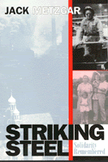

<body bgcolor="#FFFFFF" text="#000000" link="#0000FF" vlink="#CC0000" alink="#CC0000"><center><hr width="350" size="1" align="center" noshade>A middle-class son remembers his father's union and the steel strike of 1959<hr width="350" size="1" align="center" noshade><p><a href="https://cdcshoppingcart.uchicago.edu/Cart/ChicagoBook.aspx?ISBN=9781566397384&&PRESS=temple" target="_top">Buy this book!</a> | <a href="https://cdcshoppingcart.uchicago.edu/Cart/Cart.aspx?PRESS=temple" target="_top">View Cart</a> | <a href="https://cdcshoppingcart.uchicago.edu/Cart/Cart.aspx?PRESS=temple" target="_top">Check Out</a></p><p></p></center><!--none//--><h1>Striking Steel</h1>
<H2>Solidarity Remembered</H2>
<h3>Jack Metzgar</h3>
<P>cloth 1-56639-738-3 $81.50, Feb 00, <FONT COLOR=#990033>Out of Stock Unavailable</FONT>
<br>paper 1-56639-739-1 $31.95, Feb 00, <FONT COLOR=#990033>Available</FONT>
<br>Electronic Book 1-43990-532-0 $31.95 <FONT COLOR=#990033>Out of Stock Unavailable</FONT>
<BR> 320 pp
6x9
2&nbsp;tables 1&nbsp;figure 16&nbsp;halftones
</P><h3 align="center"><P><font color="#996633">Winner of the Sidney Hillman Foundation Award,
2001</font></P>
</H3>
<BLOCKQUOTE><I>"</I>Striking Steel<I> is part memoir, part history of the steelworkers and their union. It is a unique addition to the literature on American labor. Although I disagree with Metzgar's spirited defense of the union, this is an indispensable book for any student of American labor and of recent American history!"</I>
<BR>&#151<B>Stanley Aronowitz</B>, author of <I>From the Ashes of the Old: American Labor and America's Future</I><I></I></BLOCKQUOTE>
<P>Having come of age during a period of vibrant union-centered activism, Jack Metzgar begins this book wondering how his father, a U.S. Steel shop steward in the 1950s and '60s, and so many contemporary historians could forget what this country owes to the union movement.
<p>Combining personal memoir and historical narrative, <i>Striking Steel</i> argues for a reassessment of unionism in American life during the second half of the twentieth century and a recasting of "official memory." As he traces the history of union steelworkers after World War II, Metzgar draws on his father's powerful stories about the punishing work in the mills, stories in which time is divided between "before the union" and since. His father, Johnny Metzgar, fought ardently for workplace rules as a means of giving "the men" some control over their working conditions and protection from venal foremen. He pursued grievances until he eroded management's authority, and he badgered foremen until he established shopfloor practices that would become part of the next negotiated contract. As a passionate advocate of solidarity, he urged coworkers to stick together so that the rules were upheld and so that everyone could earn a decent wage.
<p><i>Striking Steel</i>'s pivotal event is the four-month nationwide steel strike of 1959, a landmark union victory that has been all but erased from public memory. With remarkable tenacity, union members held out for the shopfloor rules that gave them dignity in the workplace and raised their standard of living. Their victory underscored the value of sticking together and reinforced their sense that they were contributing to a general improvement in American working and living conditions.
<p>The Metzgar family's story vividly illustrates the larger narrative of how unionism lifted the fortunes and prospects of working-class families. It also offers an account of how the broad social changes of the period helped to shift the balance of power in a conflict-ridden, patriarchal household. Even if the optimism of his generation faded in the upheavals of the 1960s, Johnny Metzgar's commitment to his union and the strike itself stands as honorable examples of what collective action can and did achieve. Jack Metzgar's <i>Striking Steel</i> is a stirring call to remember and renew the struggle.
<BR>&nbsp;<h2>Excerpt</h2><P>Excerpt available at <a href="http://www.temple.edu/tempress">www.temple.edu/tempress</a></p>
<BR>&nbsp;<h2>Reviews</h2>
<p><I>"We have here an informative, engaging, perceptive, sometimes controversial and always challenging history of the 1959 steel strike and the union struggles of the '50s. A thought-provoking review of a much neglected period and event, its results and its implications."</I>
<BR>&#151<B>Lynn Williams</B>, past President of the United Steelworkers of America
<P><I>"Jack Metzgar is a fabulous writer whose memoir of his own steelworking family illuminates a now distant shopfloor universe of moral conflict, cultural change, and working class power. </I>Striking Steel<I> is full of insight, wisdom, and passion. read it and you will turn the pages with eagerness and appreciation."</I>
<BR>&#151<B>Nelson Lichtenstein</B>, University of Virginia
<P><I>"Through its compelling portrayal of one family, one union and industry, </I> striking Steel<I> vividly brings to life the spirit fo the American labor movement. and in its brilliant reinterpretation of one of the most misunderstood eras in our nations' past; it makes a potent case for organized laobr's continuing role in helping to shape the next American century."</I>
<BR>&#151<B>Roberta Lynch</B>, International Vice President of AFSCME and co-author of <I>Rusted Dreams: Hard Times in a Steel Community</I>
<p><i>"The publication of </i>Striking Steel<i> adds to a growing literature about the post-war working-class identity and ways of life. It is the kind of class studies scholarship that labor educators should become acquainted with and use in their teaching."</i>
<br>&#151<b>Robert Bruno</b>, University of Illinois
<p><i>"</i>Striking Steel<i> is a history of the era of collective bargaining in steel, and, despite Metzgar's modesty, very good history it is."</i>
<br>&#151<b><i>The Journal of American History</i></b>
<p><i>"...sharply drawn profiles of relationships inside a working-class family and a marvelously complex description of union culture and work practices in a 1950s steel mill."</i>
<br>&#151<b><i>Dissent</i></b>
<BR>&nbsp;<h2>Contents</h2><P>
<p>Introduction
<p><b>Part I: The 1959 Steel Strike</b>
<br>Prologue
<br>1. Getting to 1959
<br>2. No Backward Steps: The Biggest Strike in U.S. History
<p><b>Part II: Cause and Consequences</b>
<br>Prologue
<br>3. 2-B or Not 2-B: A Battle for "Rigid Union Work Rules"
<br>4. When the Wolf finally Came: Union Power and the Demise of Steel
<p><b>Part III: Remembering or Not</b>
<br>Prologue
<br>5. Steel Family Memories and the Culture of Unionism
<br>6. The Contest for Official Memory
<p>Appendix A: Histories of Postwar America
<br>Appendix B: Interviews
<br>Notes
<br>Acknowledgments
<br>Index
<br>Photographs
</P><BR>&nbsp;<H2>About the Author(s)</H2>
<P><B>Jack Metzgar</B> is Professor of Humanities at Roosevelt University.</P>
<BR><H2>Subject Categories</H2>
<p><A HREF="/tempress/american.html" TARGET="_top">American Studies</a>
<BR><A HREF="/tempress/labor.html" TARGET="_top">Labor Studies and Work</a>
</p>
<BR><h2 class="inpageheading">In the series</H2>
<P><I><a href="http://www.temple.edu/tempress/critical.html" onMouseOver="window.status='Click for other books in this series!'; return true;" onMouseOut="window.status=''; return true;" target="_top">Critical Perspectives on the Past</a></i>, edited by <a href="http://www.temple.edu/tempress/authors/benson_memoriam.html" target="_top">Susan Porter Benson</a>, Stephen Brier, and Roy Rosenzweig.
</p><p><i>Critical Perspectives on the Past</i>, edited by Susan Porter Benson, Stephen Brier, and Roy Rosenzweig, is concerned with the traditional and nontraditional ways in which historical ideas are formed. In its attentiveness to issues of race, class, and gender and to the role of human agency in shaping events, the series is as critical of traditional historical method as content. Emphasizing that history is itself an interpretation of material events, the series demonstrates that the historian's choices of subject, narrative technique, and documentation are politically as well as intellectually constructed.</p>
<p align="center"><a href="https://cdcshoppingcart.uchicago.edu/Cart/ChicagoBook.aspx?ISBN=9781566397384&&PRESS=temple" target="_top">Buy this book!</a> | <a href="https://cdcshoppingcart.uchicago.edu/Cart/Cart.aspx?PRESS=temple" target="_top">View Cart</a> | <a href="https://cdcshoppingcart.uchicago.edu/Cart/Cart.aspx?PRESS=temple" target="_top">Check Out</a></p><p><font face="Arial" size="1"><a href="copyright.html" onMouseOver="window.status='Web Copyright Policy';return true;" onMouseOut="window.status=''" title="Web Copyright Policy">&copy;</a> 2015 <a href="http://www.temple.edu" target="new" onMouseOver="window.status='Link to Temple University home page';return true;" onMouseOut="window.status=''" title="Link to Temple University home page">Temple University</a>. All Rights Reserved. http://www.temple.edu/tempress/titles/1472_reg.html</font></p>